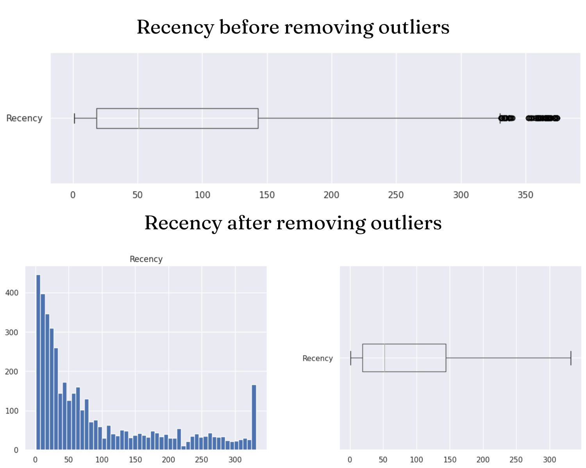
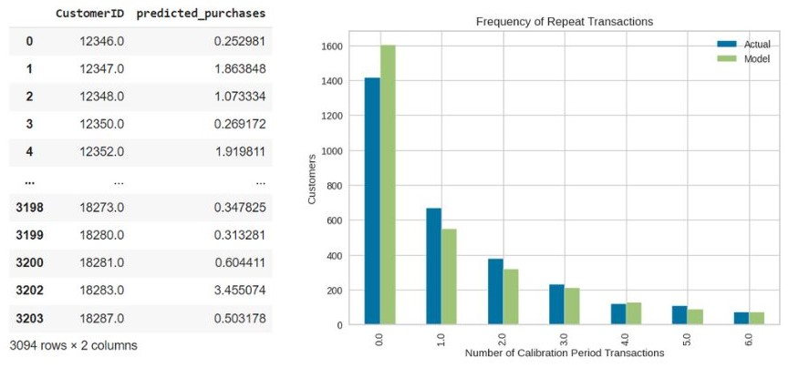

Customer Segmentation and Lifetime Value Prediction using machine learning models
In this project, I use K-Means and DBSCAN to cluster customers and use BG/NBD, Gamma Gamma and XGBoost to predict customer lifetime value
Project Summary
Click here to access full of my project on my Github- Input: An online retail dataset of a online store from 2010-2011
- Goal:
- Identify which is the better clustering algorithm for customer segmentation: K-Means or DBSCAN
- Identify which is the better clustering algorithm for customer lifetime value prediction: K-Means or DBSCAN
- Propose business strategies
- Insight:
- Clustering Efficiency Rating: DBSCAN+K-Means > K-Means > DBSCAN
- Customer Lifetime Value Prediction Efficiency Rating: BG/NBD + Gamma Gamma > XGBoost
- Business Implementation:
Group Name Ranking Characteristics Business strategies 0 Loyal customers 1 Second highest average order value (AOV)
Highest CLTVIncrease their AOV by introducing promotional combos or promoting high-value products on special occasions 1 Potential customers 2 Highest AOV, low purchases, leading to CLTV ranking 2nd Encourage them make purchase multiple times
- Introducing the service of accumulating reward points after each purchase or ranking members according to the number of purchases. The higher the rank, the more attractive promotions.
- Prioritize advertising products with a short shelf life to these customers to encourage them to buy again, such as: foods, drinks or cosmetics.2 Needing attention 3 Low AOV, medium purchases and low CLTV
Buying randomly: special occasions or discounts.Impress customers by introducing good feedback, products with high rating
- Project Duration
- Data description and preprocessing
- Remove nulls and outliers
- Create RFM model
- Standardization and scaling data - Clustering with K-Means and DBSCAN
- Clustering with K-MEans
- Clustering with DBSCAN
- Comparing based on Silhouette score of two models - Predicting customer lifetime value
- Predicting customer lifetime value with BG/NBD and Gamma
- Predict customer lifetime value with XGBoost
- Comparing based on RMSE of two models - Proposing business strategies
- Data description and preprocessing
- Data collection and description
The dataset retrieved from Kaggle contains all transactions that occurred between January 12, 2010 and September 12, 2011 for a UK-based online retailer. The company's products are gifts for the holidays. Many of the company's customers are wholesalers. The dataset has 541909 rows and 8 columns as follows.
Columns Description InvoiceNo Some bills. A 6-digit integer that is uniquely assigned to each transaction. If the code starts with the letter 'c', the invoice is canceled. StockCode Product code. A 5-digit integer assigned to each individual product Description Product's Name Quantity The number of products InvoiceDate Transaction time created UnitPrice Product unit price CustomerNo Customer code. A 5-digit integer that is uniquely assigned to each customer. Country Client's country of residence - Data preprocessing
- We deleted rows with duplicate data, null CustomerNo, negative Quantity and UnitPrice values.
- Converted the data type of the InvoiceDate column to datetime.# Remove duplicate rows df1.drop_duplicates() # Delete rows with null CustomerNo df1 = df1[pd.notnull(df1['CustomerNo'])] # Remove orders having Quantity =< 0 df1=df1[df1['Quantity']>0]
- Create new dataframe based on RFM model (Recency, Frequency and Monetary) by each CustomerNo#Converted the data type of the InvoiceDate column to datetime df1["Date"] = pd.to_datetime(df["Date"]) #Invoice columns shows only Date from datetime import datetime df1["Date"] = df1["Date"].dt.date
- Handle outliers by using standard score (z-score) and Interquartile Range (IQR).df2 = df1.copy() #Add TotalPrice column df2['TotalPrice']= df2['Price'] * df2['Quantity'] # Add Avg_Monetary (Average Monetary) df2['Avg_Monetary'] = df2['TotalPrice'] # Add Tenure column df2['Tenure'] = df2['Date'] df2.head() import datetime # Select current_date 1 day from the last day ie 10/12/2019 current_date = df2["Date"].max() + datetime.timedelta(days=1) print(current_date) # Return the corresponding columns to the RFM . model rfm = df2.groupby(['CustomerNo','Country']).agg({ 'Date': lambda x: (current_date - x.max()).days, "TransactionNo": lambda InvoiceNo: InvoiceNo.nunique(), 'TotalPrice': 'sum', 'Avg_Monetary':'mean', 'Tenure': lambda y: (current_date - y.min()).days}) # Assign names to columns rfm.columns = ["Recency", "Frequency", "Monetary","Avg_Monetary","Tenure"]Remove outliers in Monetary columns#Delete lines with Monetary's zscore > 3 rfm1 = rfm1[(z < 3).all(axis=1)] - Customer Segmentation using K-Means and DBSCAN
- K-Means Choosing K by using the Silhouette score: We can easily see the elbow position at K=3. At K=3, the Silhouette score has the highest value close to 0.597. Dataset is splitted into 3 groups. There are 1468 objects in cluster 0, 1498 objects in cluster 1 and 1349 objects in cluster 2.
- DBSCAN Construct a k-distance graph to select the appropriate Eps distance for the DBSCAN model. The calculated distance here will be the Euclidean distance, the minimum number of MinPts data points located in the neighborhood will be selected by the group based on the amount of data, here will choose 3 different MinPts of 31, 62 and 7; for each MinPts will look at the corresponding k-distance graphs and select the eps based on the 'elbow' region of the graph.
- Combine K-Means and DBSCAN After clustering by K-Means algorithm the number of clusters is 3. We will use the DBSCAN algorithm to remove noise points in each cluster. This will help the clusters to be more distinguished from each other by effectively removing the noise point.
Test results and indexes of each clustering group:
Number of clusters will be 5.DBSCAN 1 clustering DBSCAN 2 clustering DBSCAN 3 clustering Number of clusters 5 5 9 Silhouette index 0.487 0.487 0.457 CH index 10349.7 10403.2 6649.1 DB index 1.09 1.03 1.75
The Silhouette score with K=3 after noise removal is 0.602922, the CH index is 15928.675631 and the DB index is 0.593439.
- Customer Lifetime Value Prediction using BG/NBD, Gamma Gamma and XGBoost
- BG/NBD + Gamma Gamma
- I use BG/NBD to predict purchases of customers- I use Gamma Gamma to predict the AOV (Average order value) of customers I will evaluate the effectiveness of the model
RMSE is low which shows that the BG/NBD and Gamma Gamma model predict the customers lifetime value quite accurately.MSE 450.1 RMSE 21.2 MAE 5.8 - XGBoost
I will use XGBoost predict the business's revenue per customer based on the xgb.XGBRegressor() model. I will evaluate the effectiveness of the modelMSE 44116.8 RMSE 210.04 MAE 54.80
- BG/NBD + Gamma Gamma
- Business Insights and Suggestions
- Based on CLTV and geography
- Japan has the highest average purchase value but their average frequency is quite low which means they usually buy luxury products in special occasions like holidays or festivals
- The UK is the main market due to the highest average total purchase value but not in the top of the countries with the average purchase value means that UK customers often buy frequently not buy a lot.
- Businesses should prioritize advertising luxury items and offer discounts on special occasions like: Lunar new year or Christmas.
- Increasing the purchasing value of the UK customer by offering coupons or discounts when they buy combo.
- Combine segmentation and CLTV suggestions
Group Name Ranking Characteristics Business strategies 0 Loyal customers 1 Second highest average order value (AOV)
Highest CLTVIncrease their AOV by introducing promotional combos or promoting high-value products on special occasions 1 Potential customers 2 Highest AOV, low purchases, leading to CLTV ranking 2nd Encourage them make purchase multiple times
- Introducing the service of accumulating reward points after each purchase or ranking members according to the number of purchases. The higher the rank, the more attractive promotions.
- Prioritize advertising products with a short shelf life to these customers to encourage them to buy again, such as: foods, drinks or cosmetics.2 Needing attention 3 Low AOV, medium purchases and low CLTV
Buying randomly: special occasions or discounts.Impress customers by introducing good feedback, products with high rating
- Insights
- Business Suggestions
Here the full code and dataset I used
Click here